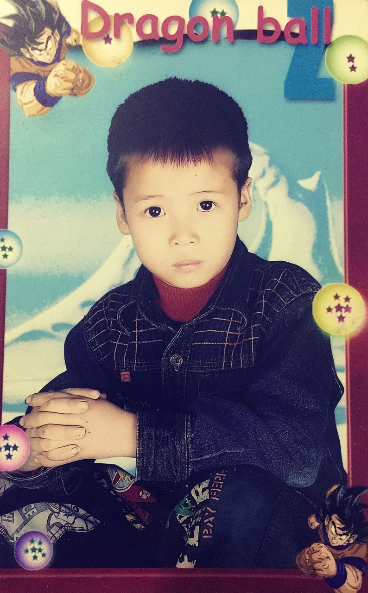
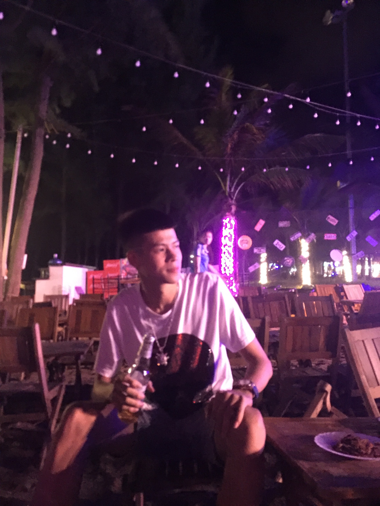

Họ và tên: Chu Tiến Đạt FB:
Chu Tiến Đạt
Sinh ngày:26/09/2003
Quê quán:Đông Anh-Hà Nội
Hiện tại:ở Từ Sơn-Bắc Ninh
Sở thích:đá bóng, nghe nhạc chill, chơi game FO4 khi ở net và đi nhậu cùng ae.
Những bản nhạc mà mình hay nghe:
Đây là mình khi mới 7 tuổi nghiện siêu nhân và đam mê biến hình lắm.
Trưởng thành hơn ở tuổi 17 với những giông tố và hoài bão, ae thấy không trước đẹp trai chứ giờ đỡ hơn rùi
Kỉ niệm biển Sầm Sơn 2019 với tập thể lớp 10A2 mỗi lần nhớ lại là thấy dưng dưng kí ức.
Mình đã thất bại ở kì thi THPT quốc gia với 2 vấn đê mà vẫn đeo đẵng mình đó chính là:
Nhưng không vì đó mà khép lại con đường học tập và vẫn tìm tòi những trường mà đào tạo về uy tín CTNT
ngành mà đang được gọi là sở thích của chính mình.
Cho đến khi được bạn giới thiệu về FPT APTECH trường mà
em họ bạn đấy đang theo học, chị đó là Nguyễn Ninh
(đã xinh còn giỏi nha) mình cũng tìm hiểu
và được cung cấp những thông tin quý báu từ chị. Gia đình cũng đồng ý nên là
mình đã có những bước chân chập chững bước vào học tại ngôi trường này.
Bây giờ mình đang trong tập đoàn với sự điều hành của chủ tịch Đặng Kim Thi và những anh hùng bàn phím triệu đô
quá tuyệt. Và mình đang team 3 Clown Kings
cùng với 2 người ae Nguyễn Minh Quân
FB: Duc Anhh và Mai Duy Quân
FB: Mai Quân .
| Các quý trong năm | Thủ Đô Hà Nội | TP Hồ Chí Minh |
|---|---|---|
| Quý 1 | 100 gói hạt điều | 200 gói hạt điều |
| Quý 2 | 250 gói hạt điều | |
| Quý 3 | 300 gói hạt điều | Doanh số | 400 gói hạt điều | 450 gói hạt điều |
Vậy bao lâu nữa bán được 1 tỉ gói mè ??